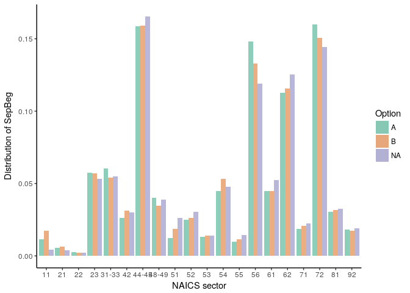
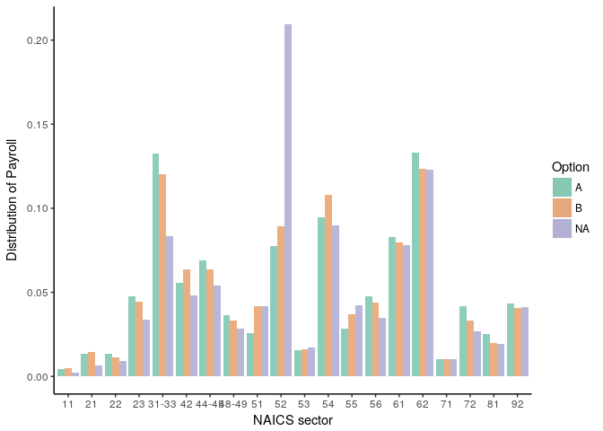

Snapshot S2014 availability
Lars Vilhuber
Users of the LEHD data in the Federal Statistical Research Data Centers (FSRDC) can only access data from states that have granted non-Census researchers access to the data. There are, in short, two options that a state can choose: the state can delegate the approval process to the Census Bureau, which will grant access to qualified researchers on qualified research projects (option A); or it can itself review and approve projects that are submitted through the FSRDC project system (option B). Thus, researchers will automatically get access to states with option A if their project is approved by the Census Bureau, and may later obtain access to states’ data that chose option B.
We obtained a list of the state of the MOUs as of
12-10-2015.
There are still a few states at this time that have an older form of the MOU, and for which we cannot easily deduce the option chosen. Here, we will use the later versions (version 2) that have selected “Option A”.
Of the 53 states with a MOU on file as of 12-10-2015 with the Census Bureau, 14 have chosen Option A:
| Option | Freq |
|---|---|
| A | 14 |
| B | 29 |
| NA | 10 |
Missing Completely at Random
While the number of states that have not agreed to Option A may seem small, from a statistical point of view, they have one important feature: the decision to participate (\(M\)) is (most likely) not correlated with any observable characteristic (\(Y\)) of the non-participating state (Statistical Analysis with Missing Data, 2nd edition, Roderick J. A. Little and Donald B. Rubin, New York: John Wiley & Sons, 2002):
\(p(M | Y, \theta, \psi) = p(M|\psi)\)
where \(\theta\) are parameters associated with the data generating process, and \(\psi\) are parameters associated with the decision to participate in Option A.
Comparing sets of states
To assess the claim, we are going to use public-use QWI data, drawn from http://lehd.ces.census.gov/pub/, to assess how comparable the set of states having chosen Option A are, compared to the remaining states, based on a variety of variables available.
Users who wish to consider different variables than the ones we show here should feel free to clone this git repository, and change parameters of interest, or access our interactive webpage.
Parameters
# common quarter to look at
# this could be deduced from metadata, here we hard-code it
qwivintage <- "latest_release"
qwiyear <- 2014
qwiquarter <- 1
# Read the version file
version.url <- url(paste(urlbase,"ak",qwivintage,"DVD-sa_f","version_sa_f.txt",sep="/"))
version <- read.csv(version.url,header = FALSE,sep = "",as.is = TRUE)
names(version) <- c("type","state","fips","range","schema","release","vintage")
write.csv(x = version[,c("type","schema","release")],file="metadata.csv")Some Technical Stuff
We first define (source) a function ‘download_qwi.R’ to download and subset QWI CSV files.
source("download_qwi.R",echo = TRUE)##
## > download_qwi <- function(state, qyear = NA, qquarter = NA) {
## + qwifile <- paste("qwi", tolower(state), "sa_f_gs_ns_oslp_u",
## + sep = "_" .... [TRUNCATED]We then cycle through all the states and download the relevant file.
download.date <- Sys.Date()
time.qwi <- system.time(for (x in qwistates) {
eval(parse(text=paste("qwi_",tolower(x)," <- download_qwi(\"",x,"\")",sep = "")))
})The above code can take a while, in this example and on my computer, it ran for 20 minutes on 2016-05-13.
Now that we have the files, we collate them all into a single file:
for (x in qwistates) { eval(parse(text=paste("qwi_",tolower(x),"$state = \"",x,"\"",sep = "")))}
for (x in qwistates[1]) { eval(parse(text=paste("all <- qwi_",tolower(x),sep = "")))}
for (x in qwistates[-1]) { eval(parse(text=paste("all <- rbind(all,qwi_",tolower(x),")",sep = "")))}and merge on the indicators for MOU status:
allmous <- merge(all,mous,by.x="geography",by.y = "fips",all.x = TRUE)
size <- allmous[allmous$ind_level=="A",]
industry <- allmous[allmous$industry != "00",]
save(industry,file="industry.Rdata")
save(all,file="all_qwi.Rdata")
write.csv(x = industry,file="LEHD_Snapshot/qwi_industry_extract.csv")Users who want to consider different variables might change the following option:
qwi_names=names(industry)[17:48]
usevar <- qwi_names[1]
industry <- subset(industry, year==qwiyear & quarter==qwiquarter)Results
Emp
The following results were based on data for 2014Q1, downloaded on 2016-05-13, at which point at least one of the downloaded states was from release R2017Q2 (we downloaded from ‘latest_release’).
An interactive version of these graphs can be found at https://www.ncrn.cornell.edu/d/LEHD_Snapshot/.
The industry distribution of Emp by chosen option thus looks like this: 
weights: 3 (2 variable)
initial value 705.623830 final value 589.550598 converged
| Option | |
| Constant | 0.790*** |
| (0.086) | |
| Emp | 0.168*** |
| (0.050) | |
| Akaike Inf. Crit. | 1,183.101 |
| Notes: | ***Significant at the 1 percent level. |
| **Significant at the 5 percent level. | |
| *Significant at the 10 percent level. | |
SepBeg
For the industry distribution of SepBeg, the distribution looks like this:
 # weights: 3 (2 variable) initial value 705.623830 final value 592.347963 converged
| Option | |
| Constant | 0.850*** |
| (0.083) | |
| SepBeg | 0.114*** |
| (0.043) | |
| Akaike Inf. Crit. | 1,188.696 |
| Notes: | ***Significant at the 1 percent level. |
| **Significant at the 5 percent level. | |
| *Significant at the 10 percent level. | |
Putting both variables in the same model
If we use both these two variables in the same MCAR model, we obtain the following: # weights: 4 (3 variable) initial value 705.623830 iter 10 value 589.241753 iter 10 value 589.241749 final value 589.241726 converged
| Option | |
| Constant | 0.789*** |
| (0.086) | |
| Emp | 0.234** |
| (0.099) | |
| SepBeg | -0.064 |
| (0.080) | |
| Akaike Inf. Crit. | 1,184.483 |
| Notes: | ***Significant at the 1 percent level. |
| **Significant at the 5 percent level. | |
| *Significant at the 10 percent level. | |
Payroll
For the industry distribution of Payroll, the distribution looks like this:  # weights: 3 (2 variable) initial value 705.623830 iter 10 value 588.188084 final value 588.188069 converged
| Option | |
| Constant | 0.786*** |
| (0.085) | |
| Payroll | 0.135*** |
| (0.039) | |
| Akaike Inf. Crit. | 1,180.376 |
| Notes: | ***Significant at the 1 percent level. |
| **Significant at the 5 percent level. | |
| *Significant at the 10 percent level. | |
Additional variables (see the http://lehd.ces.census.gov/data/schema/V4.0.4/lehd_public_use_schema.html for names) can be easily added to the Rmd source file.
Appendix: Full list of state MOUs and option chosen as of 12-10-2015
| fips | Abbr | Name | Option | |
|---|---|---|---|---|
| 1 | 1 | AL | Alabama | B |
| 2 | 2 | AK | Alaska | NA |
| 3 | 4 | AZ | Arizona | A |
| 4 | 5 | AR | Arkansas | A |
| 5 | 6 | CA | California | B |
| 6 | 8 | CO | Colorado | B |
| 7 | 9 | CT | Connecticut | B |
| 8 | 10 | DE | Delaware | A |
| 9 | 11 | DC | District of Columbia | A |
| 10 | 12 | FL | Florida | B |
| 11 | 13 | GA | Georgia | B |
| 12 | 15 | Hi | Hawaii | B |
| 13 | 16 | ID | Idaho | B |
| 14 | 17 | IL | Illinois | A |
| 15 | 18 | IN | Indiana | A |
| 16 | 19 | IA | Iowa | A |
| 17 | 20 | KS | Kansas | A |
| 18 | 21 | KY | Kentucky | B |
| 19 | 22 | LA | Louisiana | A |
| 20 | 23 | ME | Maine | A |
| 21 | 24 | MD | Maryland | A |
| 22 | 25 | MA | Massachusetts | B |
| 23 | 26 | MI | Michigan | NA |
| 24 | 27 | MN | Minnesota | B |
| 25 | 28 | MS | Mississippi | NA |
| 26 | 29 | MO | Missouri | B |
| 27 | 30 | MT | Montana | B |
| 28 | 31 | NE | Nebraska | NA |
| 29 | 32 | NV | Nevada | A |
| 30 | 33 | NH | New Hampshire | B |
| 31 | 34 | NJ | New Jersey | B |
| 32 | 35 | NM | New Mexico | B |
| 33 | 36 | NY | New York | NA |
| 34 | 37 | NC | North Carolina | B |
| 35 | 38 | ND | North Dakota | B |
| 36 | 39 | OH | Ohio | NA |
| 37 | 40 | OK | Oklahoma | A |
| 38 | 41 | OR | Oregon | B |
| 39 | 42 | PA | Pennsylvania | B |
| 40 | 44 | RI | Rhode Island | B |
| 41 | 45 | SC | South Carolina | B |
| 42 | 46 | SD | South Dakota | NA |
| 43 | 47 | TN | Tennessee | A |
| 44 | 48 | TX | Texas | B |
| 45 | 49 | UT | Utah | B |
| 46 | 50 | VT | Vermont | B |
| 47 | 51 | VA | Virginia | B |
| 48 | 53 | WA | Washington | B |
| 49 | 54 | WV | West Virginia | B |
| 50 | 55 | WI | Wisconsin | B |
| 51 | 56 | WY | Wyoming | NA |
| 53 | 72 | PR | Puerto Rico | NA |
| 54 | 78 | VI | Virgin Islands | NA |